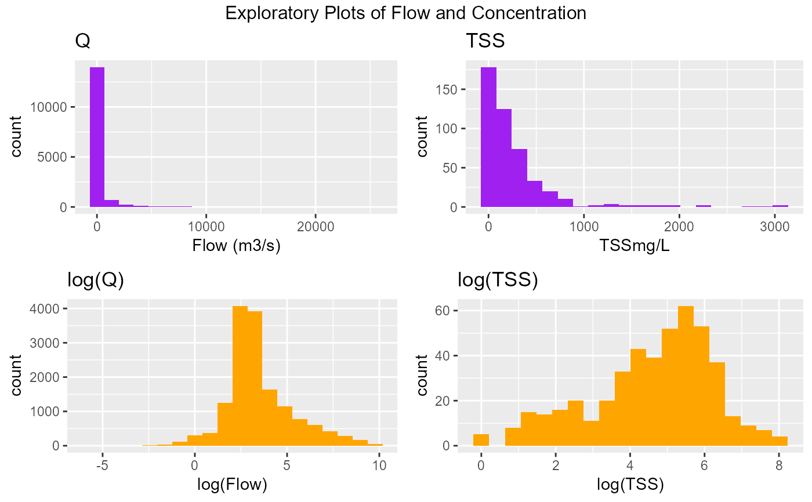
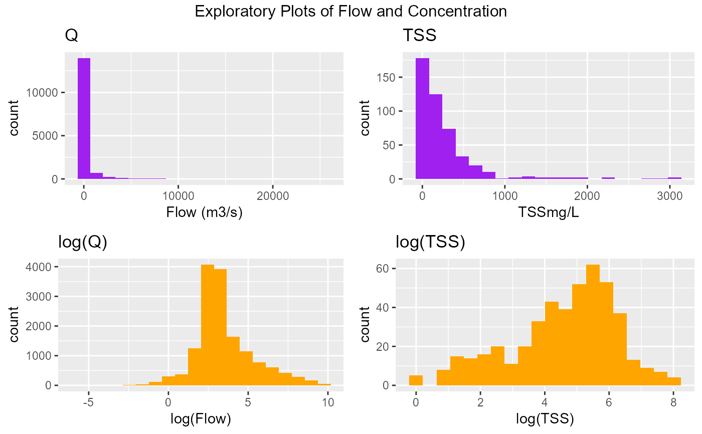

These functions read in concentration
and flow data necessary for loads calculations. The two main functions
for reading in data are ReadInData and ReadInDataFromR. The
former function makes use of the internal ReadC and
ReadQ functions for reading in external text files of
concentration and flow respectively. The latter function assumes the
data have already been read in as a dataframe with two columns
(Date and concentration/flow) and will convert these into an object
suitable for analysis with
LRE.
ReadInData(dirnm = NULL, filenm, Cnames, OmitCzeros = FALSE, format)
ReadInDataFromR(x.C, x.Q)
ReadInDataFromR(x.C, x.Q)Arguments
- dirnm
The directory name where the files are stored, e.g. 'C:/Data/'
- filenm
The name of the csv files where the concentration and flow data are stored. This should be a name common to both files with the extension
_Cand_Qrepresenting the location of the concentration and flow data respectively. For example,filenm = "test"indicates that there is atest_C.csvand atest_Q.csvlocated in the specifieddirnmdirectory.- Cnames
name of concentration variable
- OmitCzeros
a logical value indicating whether zeros should be omitted in the concentration record. If missing, it is assumed that no zeros should be omitted from the record if they exist.
- format
date format
- x.C
concentration dataframe
- x.Q
flow dataframe
Value
A list of class 'data' containing:
Q Observed flow dataset
Conc Observed concentration dataset
Standard summary and plot functions apply.
Details
The ReadInData function reads in two comma delimited text files
using the read.csv function. The first is a
concentration dataset containing two columns: date and concentration
measured in mg/L. The second is a flow dataset containing two columns:
date and flow measured in cumecs.
The concentration and flow files will have a name common to both and
are distinguished by a _C for concentration and a Q
for flow. These need to be .csv files.
By default, if zeros exist in the concentration record, they will
be left in the record. If they are to be removed then the
OmitCzeros argument will need to be set to TRUE.
The ReadInDataFromR function reads in two R objects that are dataframes.
The first is a concentration dataset containing two columns:
date and concentration measured in mg/L. The second is a flow
dataset containing two columns: date and flow measured in cumecs.
Note
Concentrations and flows measured in other formats will
need to be converted prior to using this function and
subsequent functions of the LRE package.
References
Kuhnert, P.M., Henderson, B.L., Lewis, S.E., Bainbridge, Z.T., Wilkinson, S.N. and Brodie, J.E. (2012) Quantifying total suspended sediment export from the Burdekin River catchment using the loads regression estimator tool, Water Resources Research, 48, W04533,doi:10.1029/2011WR011080.
See also
read.csv, ReadInData
Examples
# Reading in data from a file
# This function assumes you will have two csv files:
# burdR_Q.csv and burdR_C.csv representing
# flow and concentration files respectively
# The following script is not executed:
if (FALSE) { # \dontrun{
# Reading in data from external files
library(LRE)
burdR <- ReadInData(dirnm = "C:/Files/", filenm = "burdR",
Cnames = "TSS")
} # }
# Reading in data already stored in R
library(LRE)
burdR <- ReadInDataFromR(x.C = burdRC, x.Q = burdRQ)
plot(burdR)
#> Warning: Removed 32 rows containing missing values or values outside the scale range
#> (`geom_point()`).
 summary(burdR)
#> Flow Data:
#> ---------
#> Flow Collection Period: From 1973-12-02 to 2015-06-30
#> No. of records: 15186 Average sampling frequency: 1 days
#> Flow: min=0 max=25482.8
#> percentiles: 25th (10) 50th (22) 75th (74.17) 90th (451.99) 95th (1377.12) 97.5th (2906.43) 99th (6488.2)
#> median=21.51
#> mean=302.26
#>
#> Concentration Data:
#> -------------------
#> Pollutant: TSS
#> Concentration Collection Period: From 2006-01-26 to 2016-06-23
#> No. of records: 461 Average sampling frequency: 713927 secs
#> Concentration: min=1 max=3060
#> percentiles: 25th (28) 50th (135) 75th (313) 90th (451.99) 95th (812) 97.5th (1545) 99th (2304)
#> median=135
#> mean=264.49
#>
hist(burdR)

if (FALSE) { # \dontrun{
# Reading in data from external files
library(LRE)
burdR <- ReadInData(dirnm = "C:/Files/", filenm = "burdR",
Cnames = "TSS")
} # }
summary(burdR)
#> Flow Data:
#> ---------
#> Flow Collection Period: From 1973-12-02 to 2015-06-30
#> No. of records: 15186 Average sampling frequency: 1 days
#> Flow: min=0 max=25482.8
#> percentiles: 25th (10) 50th (22) 75th (74.17) 90th (451.99) 95th (1377.12) 97.5th (2906.43) 99th (6488.2)
#> median=21.51
#> mean=302.26
#>
#> Concentration Data:
#> -------------------
#> Pollutant: TSS
#> Concentration Collection Period: From 2006-01-26 to 2016-06-23
#> No. of records: 461 Average sampling frequency: 713927 secs
#> Concentration: min=1 max=3060
#> percentiles: 25th (28) 50th (135) 75th (313) 90th (451.99) 95th (812) 97.5th (1545) 99th (2304)
#> median=135
#> mean=264.49
#>
hist(burdR)

if (FALSE) { # \dontrun{
# Reading in data from external files
library(LRE)
burdR <- ReadInData(dirnm = "C:/Files/", filenm = "burdR",
Cnames = "TSS")
} # }